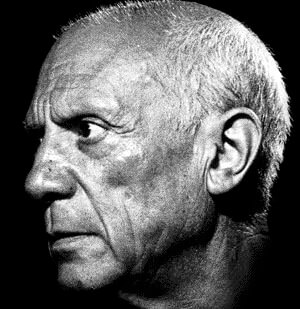
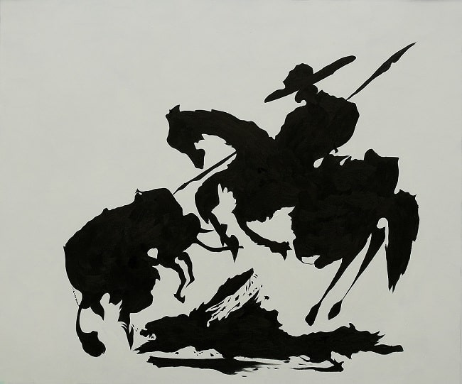

Pablo Picasso is probably the most important figure of the 20th century, in terms of art, and art movements that occurred over this period. Before the age of 50, the Spanish born artist had become the most well-known name in modern art, with the most distinct style and eye for artistic creation. There had been no other artists, prior to Picasso, who had such an impact on the art world, or had a mass following of fans and critics alike, as he did.
Pablo Picasso was born in Spain in 1881, and was raised there before going on to spend most of his adult life working as an artist in France. Throughout the long course of his career, he created more than 20,000 paintings, drawings, sculptures, ceramics and other items such as costumes and theater sets. He is universally renowned as one of the most influential and celebrated artists of the twentieth century.
Picasso's ability to produce works in an astonishing range of styles made him well respected during his own lifetime. After his death in 1973 his value as an artist and inspiration to other artists has only grown. He is without a doubt destined to permanently etch himself into the fabric of humanity as one of the greatest artists of all time.
As an artist and an innovator, he is responsible for co-founding the entire Cubist movement alongside Georges Braque. Cubism was an avant-garde art movement that changed forever the face of European painting and sculpture while simultaneously affecting contemporary architecture, music and literature. Subjects and objects in Cubism are broken up into pieces and re-arranged in an abstract form. During the period from approximately 1910-1920 when Picasso and Braque were laying the foundation for Cubism in France, its effects were so far-reaching as to inspire offshoots like the styles of Futurism, Dada, and Constructivism in other countries.

Picasso is also credited with inventing constructed sculpture and co-inventing the collage art style. He is also regarded as one of three artists in the twentieth century credited with defining the elements of plastic arts.
This revolutionary art form led society toward societal advances in painting, sculpture, printmaking and ceramics by physically manipulating materials that had not previously been carved or shaped. These materials were not just plastic, they were things that could be molded in some way, usually into three dimensions. Artists used clay, plaster, precious metals, and wood to create revolutionary sculptural artwork the world had never seen before.
The Blue Period (1901-1904)
The somber period within which Picasso both personally experienced poverty and its effect on society right around him is characterized by paintings essentially monochromatic paintings in shades of blue and blue-green, only occasionally warmed by other colors. Picasso's works during this period depict malnutrition, prostitution,
and the posthumous portraits of friend Carlos Casagemas after his suicide, culminating in the gloomy allegorical painting La Vie. La Vie (1903) portrayed his friend's inner torment in the face of a lover he tried to murder.